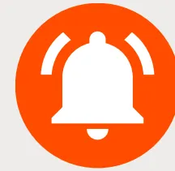
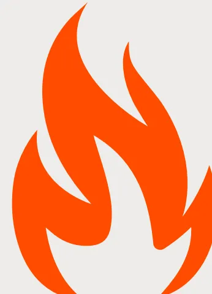
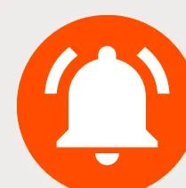
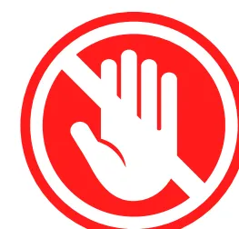
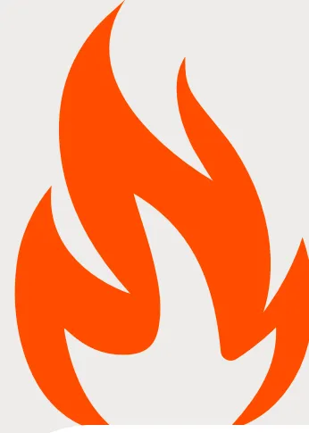
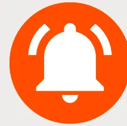

RECOMMANDATIONS
INCENDIES EN FRANCE
Fiche réflexe spécifique de médecine de catastrophe face à un feu de forêt destinée aux intervenants/bénévoles non sapeurs-pompiers.

RÈGLE D'OR : ON NE S'AUTO-ENGAGE PAS SEUL
Avant le départ
- • Ne jamais intervenir seul, rester en binôme avec surveillance mutuelle
- • Toujours connaître la zone refuge et la voie d'évacuation
- • Informer quelqu'un de sa localisation
- • Vérifier les moyens de communication. Attention aux défauts de couverture GSM (bornes relais détruites, coupures électriques)
- • Vérifier la météo (vent, température)
Vêtements
- • Manches longues, pantalon long et chaussettes en coton épais ou laine 100%
- • Chaussures montantes en cuir à semelle épaisse
- • Gants de cuir non enduit
- • Casque (idéalement casque forestier; à défaut casque de chantier)
- • Lunettes enveloppantes
- • Tour de cou en coton, légèrement humidifié — ni sec ni détremapé
- • Retirer : lentilles de contact (à remplacer par des lunettes avec montures non métalliques), bijoux métalliques : bagues, colliers, boucles d'oreilles, piercing, montre métallique...
Protection respiratoire
- • Attention : le port du masque peut être faussement rassurant et inciter à se rapprocher en prenant des risques. Se rappeler que les masques FFP1 et FFP2 sont inflammables.
- • Le port d'un masque se fait sur avis des professionnels pompiers
Points spécifiques
- • Crème solaire SPF 50+, Baume pour les lèvres
- • Protection de la nuque
- • Lampe frontale
- • Batterie externe pour téléphone ou radio
- • Lingettes humides
- • Protection auditive si proximité des hélicoptères et avions bombardiers d'eau
L'exposition volontaire à un incendie est à très haut risque de lésions sévères et ne doit être réalisée que en collaboration avec les services de secours professionnels. Les secours professionnels sont formés et équipés pour l'exposition à ce risque.

RECOMMANDATIONS
INCENDIES EN FRANCE
Fiche réflexe spécifique de médecine de catastrophe face à un feu de forêt destinée aux intervenants/bénévoles non sapeurs-pompiers.

RÈGLE D'OR : ON NE S'AUTO-ENGAGE PAS SEUL
Au niveau du feu
Hydratation
- • Environ 0,5 à 1 Litre par heure mais jamais 1 Litre en une fois
- • Boisson avec électrolytes (type boisson pour sportifs d'endurance) pour compenser les pertes en sel
- • Sel = Sodium (chips, jambon sec, biscuits type TUC )
- • Viser une boisson à 400-600 mg de sodium/L, ou eau + aliments salés
Nutrition
Toutes les 3 heures :
- • Fruits secs ou fruits frais
- • Aliments salés
- • Glucides complexes: riz, blé, avoine ...
- • Barres énergétiques type sport d'endurance

- • Pas d'alcool
- • Pas de repas gras.
Repos
Toutes les heures, si température >38°C
- • 10 minutes en zone d'ombre (à l'abri d'un camion)
Après plusieurs heures :
- • Période prolongée en zone fraîche (sas de repos)
- • Recharger téléphone + batterie externe
- • Véhicule garé en marche avant, sortie dégagée, réservoir plein, clés sur soi
Protection des yeux
- • Lunettes fermées
- • Larmes artificielles sans conservateur: 1 goutte/oeil toutes les 2-4 heures
- • Lavage au sérum physiologique 2 fois/jour
- • Lavage face et yeux toutes les deux heures (lingettes humides ou eau)
- • Ne pas porter de lentilles de contact
L'exposition volontaire à un incendie est à très haut risque de lésions sévères et ne doit être réalisée que en collaboration avec les services de secours professionnels. Les secours professionnels sont formés et équipés pour l'exposition à ce risque.

RECOMMANDATIONS
INCENDIES EN FRANCE

Fiche réflexe spécifique de médecine de catastrophe face à un feu de forêt destinée aux intervenants/bénévoles non sapeurs-pompiers.

RÈGLE D'OR : ON NE S'AUTO-ENGAGE PAS SEUL
Gestion de la chaleur
- • Refroidissement actif pendant les pauses
- • Serviettes humides
- • Packs froids nuque/aisselles
- • Vêtements ouverts uniquement en zone sécurisée
Oxygène pendant les pauses : se fier aux symptômes d'auto-évaluation
- • Si intoxication suspectée au CO = monoxyde de carbone
- • Si SpO2 basse ( Saturation en oxygène)
- • Si symptômes neurologiques: confusion, agitation, vertiges, nausées
- • Si gêne respiratoire, essoufflement
Cyanokit® : se fier aux symptômes d'auto-évaluation
Les recommandations internationales ne préconisent pas un usage prophylactique. Le Cyanokit® est réservé :
- • Suspicion d'intoxication sévère aux cyanures
- • Fumées d'incendie en espace clos (bénévoles aidant les pompiers au niveau des maisons en feu)
Santé mentale
- • Briefing/debriefing quotidien
- • Binôme obligatoire
- • Surveillance des signes de stress avec psychologue (au niveau zone de repos)
- • Suivi à quelques semaines si mission prolongée ou événement traumatique. consultation médicale à prévoir par la coordination.
Au retour à la maison ou espace dédié de repos
- • Surveillance des brûlures des mains et des chevilles, souvent sous-estimées ;
- • Changement de vêtements contaminés par les fumées dès la fin de la journée ;
- • Déshabillage en extérieur en limitant contact et inhalation des vêtements, douche rapide après l'intervention afin de limiter l'exposition cutanée aux produits de combustion.
Ce que cette fiche ne remplace pas : Les consignes de la préfecture, du commandant des opérations de secours et des forces de l'ordre — qui priment en toutes circonstances et évoluent d'heure en heure. En cas de contradiction avec ce document, ce sont elles qui s'appliquent. Document à visée d'information. Rédigé le 27 juillet 2026.
AUTO-ÉVALUATION
The SFAR logo consists of three abstract shapes: a red teardrop-like shape at the top, a teal circle at the bottom, and the letters 'SFAR' in a dark blue sans-serif font to the right of the teal circle.Si apparition à tout moment
- • Céphalées (maux de tête importants et nouveaux)
- • Vertiges, nausées
- • Confusion (perte des idées claires, difficulté de se situer dans le temps et dans le lieu)
- • Faiblesse
- • Gêne respiratoire, essoufflement
Alors RETRAIT IMMEDIAT de zone et repos en zone repos, avec traitements et oxygène.
A white circle containing a red question mark.RECONNAÎTRE UNE INTOXICATION AU CO
Céphalées, nausées, vertiges, troubles visuels, confusion, asthénie brutale. Le tableau est superposable à un épuisement lié à la chaleur — le discriminant utile : plusieurs personnes du même groupe touchées simultanément, et amélioration franche en air libre. En cas de doute : sortir de la zone, oxygène, 15 / 112.
Personnes à risque
Asthme, BPCO, insuffisance respiratoire chronique, coronaropathie, insuffisance cardiaque, grossesse : pas d'engagement en zone exposée aux fumées. Si engagement en base arrière : traitement de secours sur soi (bronchodilatateur de courte durée d'action, dérivé nitré), seuil de retrait très bas, FFP2 systématique.
Symptômes différés
Toux sèche, oppression thoracique et irritation oculaire peuvent apparaître ou persister 24 à 72 h après l'exposition. Consulter en cas de dyspnée, de douleur thoracique, de malaise, ou d'expectoration noirâtre persistante. Rinçage abondant à l'eau claire des yeux, du visage et de la peau en cas de symptôme cutané ou oculaire.